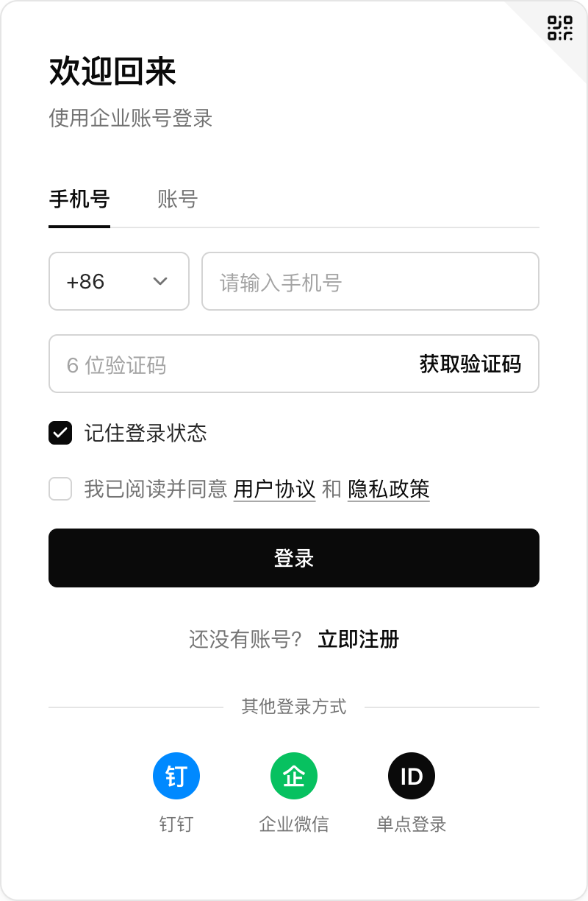
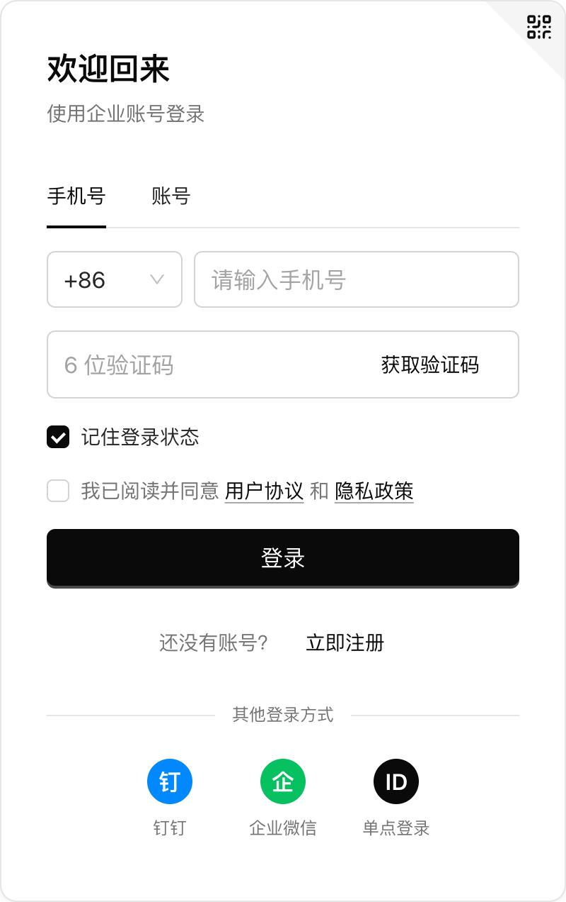

整体演示：三种外观模式与四层拆解
更换组件库时，如何保持页面的视觉与交互一致，并保留操作状态？本篇结合后台页面演示介绍底层原理，细节在后续各篇展开。
一键切换
完成一组交互后切换组件库，页面状态完整保留
- 1搜一下输入「科技」，点查询
- 2排个序点「年度金额」
- 3勾两个再翻到第 2 页
- 4收起侧栏点左下角
- 5开对话框改 A 级、写备注，不保存
- 6换组件库点 Element Plus
- ✓都还在填的、选的、勾的
在演示页里一项一项试过（2026-10-12）
React 与 Vue 框架同步切换
Ant Design 是 React 写的，Element Plus 是 Vue 写的。刚才那一下，两个都换了。



Ant Design 官网「基于 Ant Design 设计体系的 React UI 组件库」；Element Plus 官网「基于 Vue 3 的组件库」
状态不丢失的原因：保存在共用的逻辑层
用户做的事记在一份逻辑里，React 和 Vue 共用。组件库只负责画出来。


core/src/customers/controller.ts；AGENTS.md「规则」
三种外观模式
组件库原生：五个组件库各自保持原有样式
官方默认主色：Ant Design colorPrimary #1677FF、Element Plus Brand Color #409EFF、Arco ArcoBlue #165DFF、TDesign brand-color-7 #0052D9；shadcn/ui 默认 baseColor neutral
只设主题：配色统一，细节仍有差异
把规范里的颜色、字号、圆角、控件高度，填进每个组件库的主题。
颜色统一了。Element Plus 的侧栏，每一项还高出一截。
Element Plus 菜单项高度：源码 theme-chalk/src/common/var.scss 的 'item-height': 56px，官方文档没写；Arco 灰底输入框见 docs/architecture.md 原则 3；shadcn/ui 的淡阴影见 docs/取舍记录.md 第 3 条
对齐到控件规格：五个组件库完全一致
第二档到第三档，差的就是一层翻译。
README.md 第 5 行「299 项，五个组件库全部一致」
三种外观模式在代码中由两个开关控制
一个是「交不交规范」，一个是「要不要对齐」。
 组件库原生
组件库原生
只设主题对齐到控件规格图里的数是演示页实测（2026-10-12），黑白规范；检查只查对齐那一档（audit/README.md「不量什么」）
实现原理
类比：一张图纸、五个施工队与五位监理
一张图纸交给五个施工队，每个队都有自己的习惯。
图纸 = Design.md
设计只写这一份。
施工队 = 组件库
各有各的习惯，不去改它们。
规格表 = 控件规格
每种控件用图纸上的哪些数、做多大。
监理 = 套件
把图纸和规格表翻译成这个库听得懂的话。每个库配一个。
README.md 第 5 行「每个组件库一个『套件』把它翻译成自己的组件」；docs/接入一个新组件库.md「先认识几样东西」
类比：从外到内分为四层的房子
视觉、控件、结构、逻辑，从外往里。
用户点了什么、选了什么
core/src/**/controller.ts换组件库只动控件这一层，换规范只动视觉，逻辑哪种都不动。
docs/architecture.md「四层在仓库里的位置」；仓库的架构说明还有一种「五层」的分法（规范、语义角色、骨架、控件套件、框架视图），是同一套东西从代码角度切
自动检查：完成后的验收
自动检查：299 项，5 个组件库全部一致。
怎么量、量不到什么，第 05 篇讲。
README.md 第 5 行；audit/README.md
规范如何传递到组件库
修改一个数值，五个组件库同步变化
把黑白规范里的控件高度，从 32 改成 36。
下面一排是大号，读的是另一项，不跟着变。


五个组件库里的按钮、输入框，还有选择框，一起变高了。套件的代码，一个字都没改。
控件样张 · 黑白 · 对齐到控件规格，2 倍截图。36px 那一组是把 designs/mono/Design.md 第 53 行临时改成 36 以后截的，截完改了回去。这一处要改文件才看得到，所以放的是截图。
组件库的颜色与尺寸大多由变量控制
组件库里的颜色、尺寸，大多是变量，和 Figma 里的变量一个意思。
套件做的事，就是把规范里的数，填进组件库的这些变量。
变量名用的是规范里的语义角色（spec/src/roles.ts），取值是 designs/mono/Design.md 里写的
五个组件库变量的三种情况
归起来有三种，从省事到费事。
1它自己会
你只给一个主色，它自己算出一整排。
尺寸上：Ant Design
2要你说全
主色、悬停、浅底各是一个变量，都得你来填。
尺寸上：TDesign
3它改不了
数直接写在控件上，就像按钮高度直接填了 32。
尺寸上：Element Plus、Arco、shadcn/ui
接一个新组件库，第一步就是弄清它是哪一种。
一个数值在仓库中的五个传递步骤
真文件里，就是这几行
Design.md 里，机器只读 mihua-tokens 那一块；写错了直接报错。
docs/architecture.md「五层」「新增一份规范」；designs/mono/Design.md 正文第 12 行写的就是这条路
套件对齐的六种手段：由简到繁
前一种够不着，才用后一种。
--el-*height!important每用一次，套件里记一条适配记录。
AGENTS.md「规则」第二条；手段的名字照 spec/src/adaptation.ts 的 METHOD_NAMES
第 01 集完整视频在课程里
这一篇对应的第 01 集完整视频，在「给设计师的零基础 AI 课」里。
完整版文字版还有每段代码的逐行解释和四个附录（组件库档案、适配记录、取舍记录、常用提示词）。

帮我把 mihua-blocks-open 这个项目跑起来，打开演示页。再告诉我，视觉、控件、结构、逻辑这四层在仓库里，各在哪个文件夹。先不用改代码。